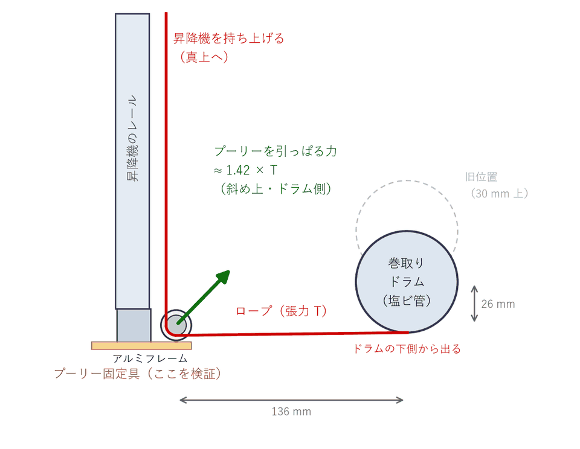
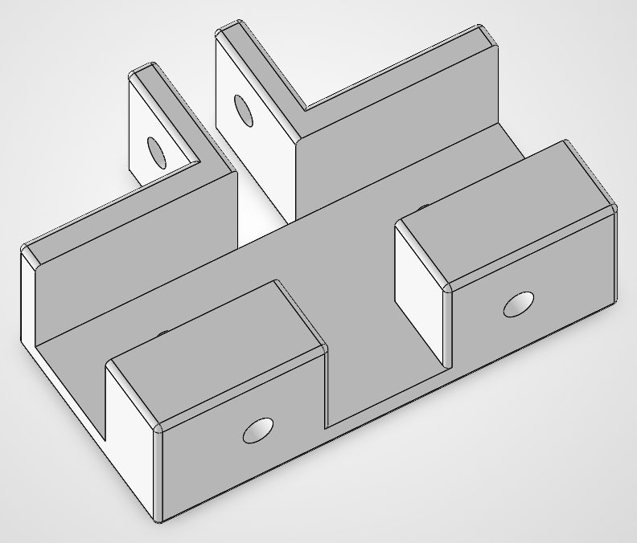
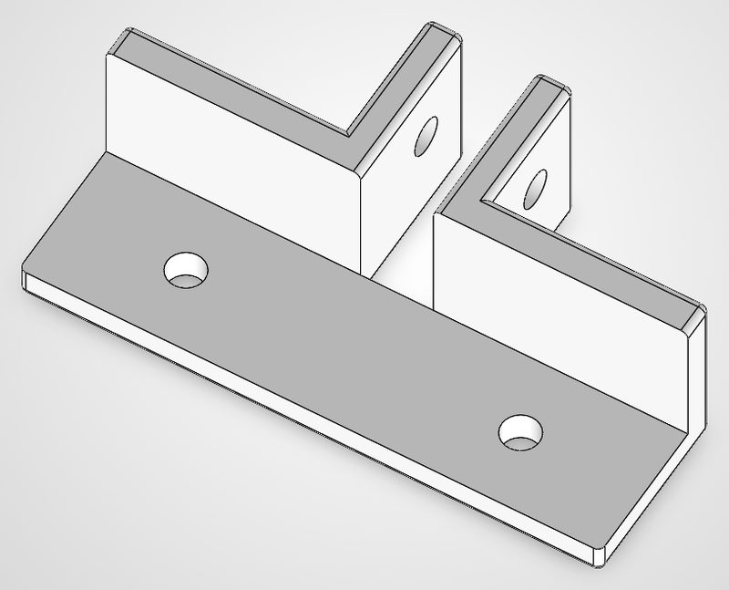
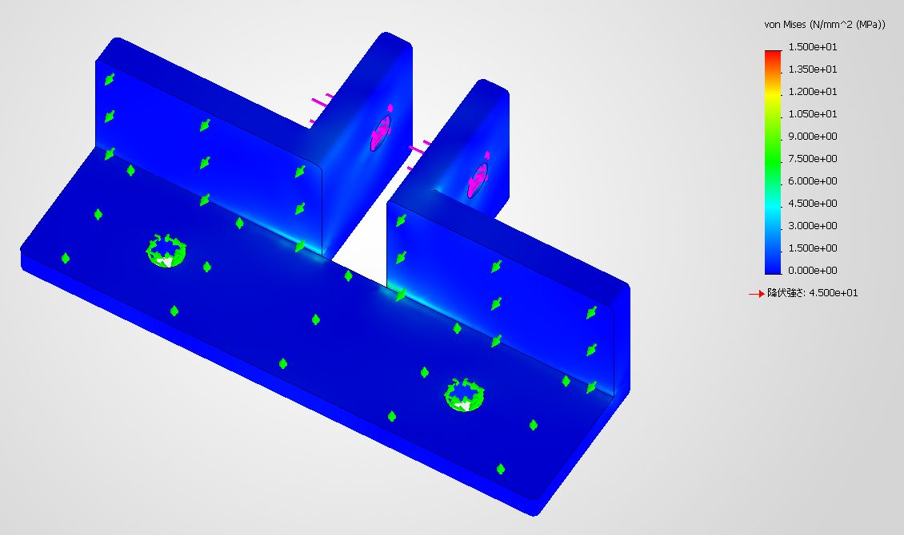
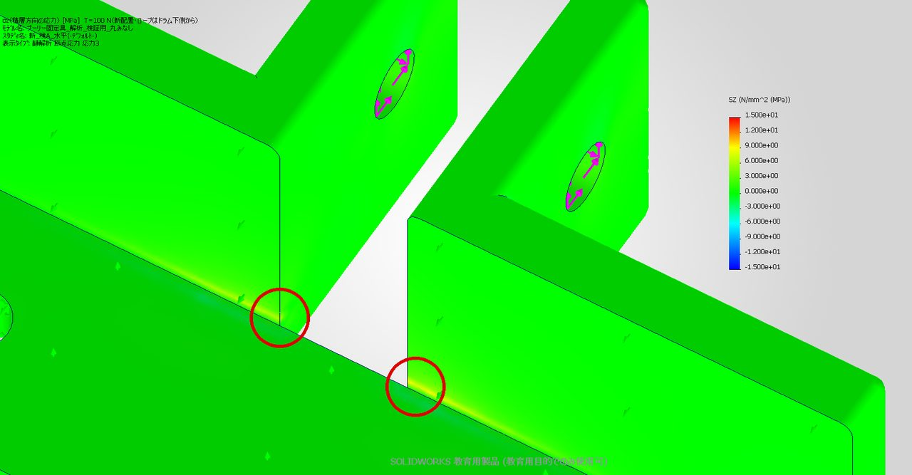

プーリー固定具の強度検証
昇降機を引き上げるロープの向きを変える部品が、3Dプリンタで作っても壊れないかを、コンピュータ上の強度計算で確かめました。
結論
- 材料を半分以下に減らした形（体積は元の約47%）でも、強さは元の形とほぼ同じ。応力の差は5〜15%程度
- ふつうに昇降させる程度の力なら、充填率15%の3Dプリントのままで足りる（安全率 約3.4〜4.4）
- ただし、巻き上げの端でモーターが止まらずに引き続ける（ストール）と、どちらの形でも壊れる計算になる。リミットスイッチや電流の制限でモーターを止める仕組みが要る
構造の強度計算はチームの専門外です。そこで、AI の Claude Code に SOLIDWORKS Simulation を操作させて解析し、前提と限界も含めてレポートにまとめました （進め方は開発の進め方）。 このページはそのレポートの第4版（2026年10月17日、巻き取りドラムの位置変更に合わせて再計算したもの）の要約です。
部品の役割と、かかる力
昇降機を持ち上げるロープは、モーターで回す巻き取りドラム（塩ビ管）から出て、小さなプーリー（滑車）で向きを変え、レールに沿って真上へ向かいます。 このプーリーを機体のアルミフレームに取り付けているのが「プーリー固定具」で、PLA を充填率15%で3Dプリントして作る予定です。
ロープはドラムの下側から出てほぼ水平にプーリーへ入り、真上へ曲がります。 そのためプーリーは、ロープの張力 T の約1.42倍の力で斜め上（ドラム側）へ引っぱられます。 この力がプーリーの軸（M5 ボルト）を通して、固定具の2枚の「耳」にかかります。


ロープの張力の見積もり
| 場合 | 考え方 | ロープ1本の張力 |
|---|---|---|
| 通常の昇降 | 動く部分 約3.25kg（CAD から）＋荷物 0.5kg ＝ 約37N をロープ2本で分担し、動き始めの勢いぶんを1.5倍 | 約28N |
| 片側のロープに全荷重 | 2本の張りがそろわず、片方だけで全部を支えた場合（×1.5） | 約55N |
| モーター拘束（ストール） | 巻き上げの端で止まらず、モーターが全力で引き続けた場合。トルク10N·m、ドラム半径30mm、ロープ2本と仮定 | 約167N |
モーターの最大トルクと、昇降機側の滑車による倍力の有無は未確認のため、推定値です。
比べた2つの形
プーリーをはさむ2枚の耳と、フレーム側面に当たる壁の形は同じで、違うのはフレームへの取り付け部分（底）だけです。


計算の方法
| 解析 | SOLIDWORKS Simulation 2026 の線形静解析。部品を約7万〜20万個の要素に分けて計算する有限要素法（FEM） |
|---|---|
| 荷重 | ロープ張力 T＝100N のときの力（プーリーに142N、斜め上・ドラム側へ）を耳のボルト穴に加える。力と応力は比例するので、ほかの張力の場合は比例で換算する |
| 支え方 A：接触あり | ボルト穴を固定し、フレームに当たる面も支える。現実に近いがやや甘め |
| 支え方 B：ボルトのみ | ボルト穴だけで支える（フレームが無いのと同じ）。厳しめ（安全側） |
| 材料 | 中まで詰まった PLA として計算し、その結果を「充填率15%で印刷した PLA の強さ」と比べる。強さは層に沿う向き 20MPa、層をはがす向き 10MPa と仮定（外周2周の一般的な設定を想定した控えめな値） |
本当の支え方は「ボルトで締めてフレームに押し付ける」ですが、計算で正確に再現しにくいため、甘めと厳しめの2通りで計算し、本当の値はその間に入ると考えます。
3Dプリンタは薄い層を積み重ねて作るので、層と層の境目をはがす向き（上下方向の応力 σz）の力に弱くなります。 そのため、全体の危なさを見るミーゼス相当応力に加えて、σz を別に調べました。
計算結果


どちらの形でも、一番弱いのはフレームに当たる壁の根元の角（スロットの端）でした。 ここで層をはがす向きの力が集中するため、最初に割れる可能性が最も高い場所です。


数値のまとめ（ロープ張力 T＝100N のとき）
| 場所・種類（MPa） | 元 A | 元 B | 検証用 A | 検証用 B |
|---|---|---|---|---|
| 壁の根元の角 σz（一番厳しい） | 8.1 | 9.9 | 8.1 | 10.4 |
| 角から2mm 離れた位置の σz | 2.7 | 3.3 | 2.9 | 3.8 |
| 耳・壁の、層に沿う向きの最大応力 | 3.5 | 7.7 | 3.8 | 8.7 |
| 最大の変形量（mm） | 0.03 | 0.36 | 0.03 | 0.42 |
A＝接触あり（甘め）、B＝ボルトのみ（厳しめ）。ドラムの位置を変える前の配置では、角の σz は2〜3割大きく出ていました（検証用 A 11.4、B 13.9）。 ロープがプーリーへほぼ水平に入るようになったためです。
強度の判定
一番弱い角の σz を、層をはがす向きの強さ 10MPa と比べました。 安全率は「壊れる力 ÷ 実際にかかる力」で、1未満なら壊れます。ばらつきを考えて2以上あれば安心、を目安にしています。
| 場合 | 検証用の安全率 | 判定 |
|---|---|---|
| 通常の昇降（T≈28N） | 3.4〜4.4 | 目安の2以上 |
| 片側のロープに全荷重（T≈55N） | 1.7〜2.2 | ほぼ目安どおり（甘めの支え方なら2以上、厳しめでは少し下回る） |
| モーター拘束（T≈167N） | 0.58〜0.74 | 壊れる。モーターを止める対策が必要 |
元の形もほぼ同じ値です（通常 3.6〜4.4、片側 1.8〜2.3、拘束 0.60〜0.74）。
追加の検証：角に丸みを付けたら
一番弱い角に丸み（フィレット）を付ければ力の集中がやわらぐのでは、と考え、検証用の形の内側の角に、丸みなし・半径1mm（R1）・半径2mm（R2）の3通りで計算しました。 アルミフレームの角が R1 なので、フレームにきちんと密着するのは R1 までです。
| T＝100N、MPa | なし・A | R1・A | R2・A | なし・B | R1・B | R2・B |
|---|---|---|---|---|---|---|
| スロットの端（端から2mm 以内）の σz | 10.8 | 10.5 | 9.4 | 13.2 | 12.3 | 7.4 |
| 角の中央部（端から2mm 以上）の σz | 9.7 | 7.7 | 7.9 | 5.5 | 5.3 | 3.6 |
比べるため3つとも同じ細かさ（要素の大きさ1.0mm）で計算しています。上の「数値のまとめ」とは細かさが違うため、値が少し異なります。
- R1 では、一番弱いスロットの端の応力はほとんど下がらない。角の中央部は約2割下がる
- R2 にするとスロットの端で1〜4割下がるが、フレームの角に当たって固定具が約0.4mm 浮くため、そのままでは使えない
- 応力が高い本当の理由は、角がとがっていることより、耳から壁の根元へ流れ込む力がスロットの端に集まることだった
対策
検証用の形を採用してよい
材料は半分以下で、強さはほぼ同じ。
モーターを止める仕組みを入れる
上端・下端のリミットスイッチ、またはモーター電流の制限でストールを防ぐ。これが無いと、どちらの形でも壊れる計算になる。
印刷の向きを変える（一番効果が大きい）
底板を下にして印刷すると、一番弱い場所に層をはがす向きの力がかかる。横向きに印刷すれば層に沿う向きになり、強さが約2倍（仮定で10→20MPa）になる見込み。サポート材が必要。
充填率より外周を増やす
厚さ4.5〜5mm と薄い部品なので、強さはほとんど外周で決まる。充填率は15%のままで、外周（壁）を4周以上、上下面を5層以上にする。
形を変えるなら耳を厚くする
角の丸みは効果が小さい。耳を厚くする（例 5→6〜7mm、スロットと反対側へ）方が有効と考えられる（効果は未計算）。
この計算の前提と限界
- ロープがドラムの下側から出る巻き方で計算している。上側から出る巻き方にすると、プーリーを引く力は 1.42T から 1.69T になり、応力は約3割大きくなる
- ロープ張力は推定。モーターの最大トルクと、昇降機側の滑車による倍力の有無が分かれば、より正確にできる
- 3Dプリント品の強さ（層に沿う向き 20MPa、はがす向き 10MPa）は、一般的な値をもとにした控えめな仮定。プリンタや設定で変わる
- 壁の根元の角は鋭い角なので、角そのもの（一点）の値は計算の細かさで変わる。判定には要素1.5mm の計算の値を使っており、1.0mm の値で判定すると安全率は2〜3割小さくなる（通常の昇降で約2.7〜3.3）
- 線形静解析（ゆっくり一定の力をかけた計算）。PLA は長時間力がかかると少しずつ変形する（クリープ）ので、持ち上げたまま長く保つ場合は余裕を見る
- プーリーは1つのかたまりとして扱い、ベアリングやねじ山は省略している